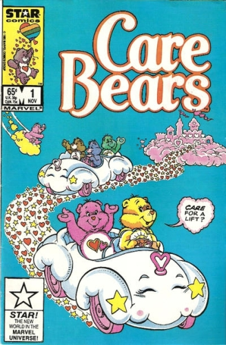

The Care Bears are a group of multi-colored bear characters. The original artwork was painted by artist Claire Russell for American Greetings in 1981 to be used on greeting cards; but the characters were later used for toys, and in TV programs and films.
The original development was through American Greetings' "Those Characters From Cleveland" research and development division, In 1983, Kenner turned the Care Bears into plush teddy bears.
The Care Bears appeared in TV specials called The Care Bears in the Land Without Feelings (1983) and The Care Bears Battle the Freeze Machine (1984). They then had a television series from 1985 to 1988, and three feature films: The Care Bears Movie (1985), Care Bears Movie II: A New Generation (1986) and The Care Bears Adventure in Wonderland (1987).
Each Care Bear comes in a different color and has a specialized insignia on its belly that represents its personality. The movie Care Bears: Oopsy Does It! named them "belly badges". Adding to the Care Bear family are the "Care Bear Cousins", which feature a lion, rabbit, penguin, raccoon, monkey, elephant, pig, dog, cat, and other such animals created in the same style as the teddy bears.
In 2002, the bears were reintroduced with new toys. Made by Play-Along Toys, the new toys offered features such as illuminated bellies upon touch, aerobic bears, and glow-in-the-dark bears. As part of this comeback, the Bears have appeared in two computer-animated movies: Care Bears: Journey to Joke-a-lot (2004), The Care Bears' Big Wish Movie (2005) and The Care Bears' Rise Up Of Kingdom (2006). In 2007, the franchise celebrated its 25th anniversary; another relaunch took place, as well as the release of Care Bears: Oopsy Does It!
In mid-2011, American Greetings announced a revival TV animated series titled Care Bears: Welcome to Care-a-Lot. The premiere of the series utilizes "30 years of caring". It premiered on The Hub on June 2, 2012. Though Welcome to Care-a-Lot lasted one season, a continuation of the series, "Care Bears and Cousins," was commissioned by Netflix and premiered November 6, 2015.
The cast of characters and animation style of Welcome to Care-a-Lot remains for Care Bears and Cousins. Toy company Just Play debuted a range of Care Bears toys (plush, figures & blind bag collectibles) based on the Welcome to Care-a-Lot characters and style guide in Spring 2015. Just Play will continue their range of product for Care Bears and Cousins in 2016.
Comics:

Comic Series: on-going TV Adaptation, 20 issues.
Writer, Illustration: Howard Post
Publisher: 1985 Star (Marvel)
Marvel is using the Star Comics label to distinguish children's comics from their usual story line connected universe.